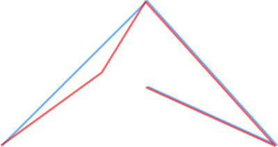

|


There are four example programs, which are described shortly below.
The point example (point_example.cpp) is a short example giving the first idea of how to use the library. It shows
The "other point" example illustrates how derived classes can be used as well as the default implemented classes in the Geometry Library.
The linestring example (linestring_example.cpp) shows how linestrings can be declared and used and shows some more algorithms. One of the important concepts of the geometry library is that it is totally built upon the standard library, using the standard containers such as std::vector.
A linestring is, as explained elsewhere in this documentation, nothing more than a vector of points. Therefore the first line of the main function of this example lists:
// Define a linestring, which is a
vector of points, and add some points
geometry::linestring<geometry::point<double>
> ls;
ls.push_back(geometry::point<double>(1.1, 1.1));
Besides this, and besides that all algorithms on std::vector can be used on geometry::linestring, the sample elucidates the library showing some algorithms:
This documentation illustrates the simplify algorithm and the intersection algorithm with some pictures.
The simplify algorithm simplifies a linestring. Simplification means that the less important points are removed from the line and that the points that are most important for the shape of a line are kept. Simplification is done using the well known Douglas Peucker algorithm. The library user can specify the distance or tolerance, which indicates how much the linestring should be simplified.
The image below shows the linestring used in the example:
The red line is the original linestring; the blue
line is the simplified line which has one point less. In geographical
applications simplification can reduce a linestring to its basic form
containing only 10% of its original points.
The intersection algorithm intersects two geometries which each other,
delivering a third geometry. In the case of the example a linestring is
intersected with a box. Intersection with a box is often called a clip. The image
below illustrates the intersection.
The red line is intersected with the blue box. The intersection result, painted in black, is a multi_linestring containing three linestrings.
The polygon example (polygon_example.cpp) shows some examples of what can be done with polygons in the Geometry Library:
The illustrations below show the usage of the within algorithm
and the intersection
algorithm.
The within algorithm results in true
if a point lies completly within a polygon. If it lies exactly on a
border it is not considered
as within and if it is inside a hole it is also not within the polygon.
This is illustrated below, where only the point in the middle is within the
polygon.
The clipping algorithm, called intersection, is illustrated below:
The yellow polygon, containing a hole, is clipped with the blue rectangle, resulting in a multi_polygon of three polygons, drawn in red. The hole is vanished.
|
February 1, 2008 |
Copyright © 1995-2008 Barend Gehrels, Geodan Holding B.V. Amsterdam, the Netherlands |